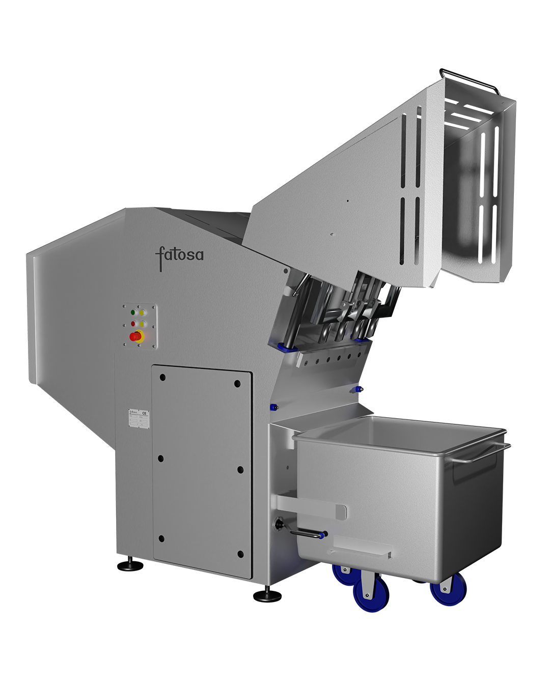
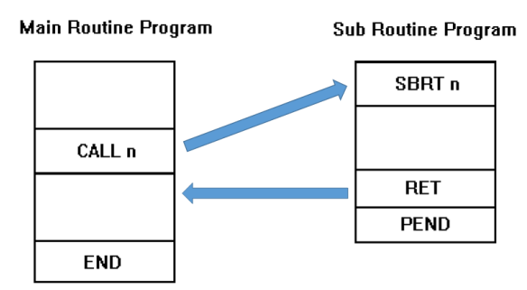
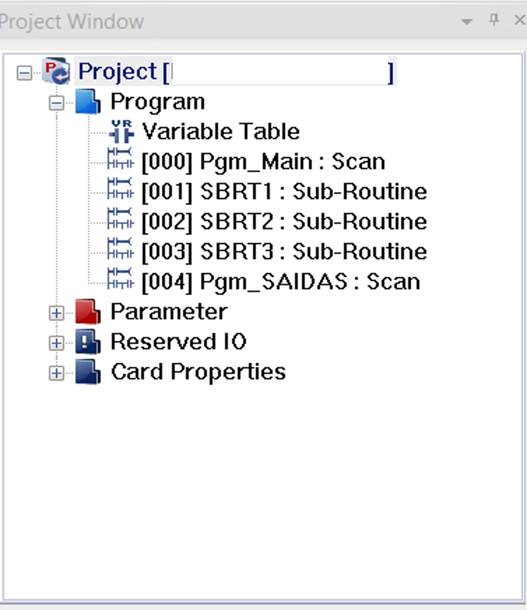

Frozen Meat Guillotine Machine Retrofit
{kind=link}

Schematics of the relay used in the project.Context
The client's frozen meat guillotine was controlled by an aging hardwired logic system that had become increasingly unreliable. Frequent failures caused significant production downtime, as operators often had to power-cycle the control panel to restore operation. In addition to replacing the aging electrical components, the client requested a new feature to stop the guillotine at a fixed position after each cycle. To meet these requirements while keeping costs low, an economical solution based on a Cimon CM2 PLC was implemented.
Machine Operation
The machine cuts frozen meat into blocks using a hydraulically driven guillotine blade. From the operator's perspective, the process is straightforward:
- Press Start to begin the cutting cycle.
- The hydraulic cylinder moves the blade up and down continuously.
- The operator feeds frozen meat into the feed opening, where it slides down under its own weight to the cutting area.
- The blade cuts the meat into blocks, which fall into a collection trolley below.
- Once all the meat has been processed, the operator presses Stop to end the cycle.
Control Logic
To implement the PLC-based control system, a completely new electrical control panel was designed and built. The panel includes safety devices such as circuit breakers and fuses, a contactor with a DC coil energized by the PLC to control the hydraulic pump, a mode selector switch, push buttons for machine operation, and indicator lamps for system status. However, the focus of this page is on the PLC control logic rather than the electrical panel design.
To explain the control strategy, the following sections use GRAFCET diagrams to illustrate each operating step, the actions performed in those steps, and the conditions required to transition between them.
The first diagram presents the master GRAFCET, which organizes the program into three operating modes: Automatic, Manual, and Emergency. Pressing the emergency stop immediately aborts the active sequence, regardless of the current operating mode. All PLC outputs are de-energized, causing the directional valve to remain in its last position and the hydraulic cylinder to stop exactly where it is.

The next diagram shows the Automatic Mode sequence. In this mode, the cylinder continuously retracts and extends, allowing the guillotine to perform the cutting cycle. If the operator presses Stop, the machine does not stop immediately. Instead, a stop request is registered, and the current cycle is allowed to finish. Once the cylinder returns to its fully retracted position, the sequence stops and waits for the Start button to resume production.

The Manual Mode sequence is intended primarily for maintenance and setup. In this mode, each press of the Start button commands the cylinder to move to the opposite position, either extending or retracting depending on its current state. As requested by the client, the hydraulic pump remains running while the machine is in Manual Mode and is only switched off when the operator presses Stop.

A design requirement for both Automatic and Manual modes was that the machine should never stop with the cylinder extended. For this reason, pressing Stop is treated as a request to stop rather than an immediate command. The active sequence continues until the cylinder reaches its fully retracted position, where the machine safely then stops.
Software Structure
The project is organized using both Scan Programs and Subroutine Programs. Scan Programs execute every PLC scan, while Subroutine Programs are only executed when called using the ECALL instruction.
{kind=link}

Flow between Main Routine (Scan Program) and a Sub routine program. I wanted to keep the logic for each operating mode completely separate and avoid logic from one mode bleeding into another. Rather than mixing the Automatic and Manual logic in a single Scan Program, where both would be evaluated every PLC cycle, each operating mode is implemented in its own subroutine. This keeps the code easier to debug and modify, while also preventing logic from one mode from interfering with another.
One important characteristic of Cimon subroutines is that variables and outputs retain their last state when a subroutine is no longer being called. Because of this, switching between operating modes requires resetting any internal flags, latches, and memory bits that should not carry over. To handle this, I implemented a dedicated reset subroutine that clears the program state whenever the machine changes modes or recovers from an emergency stop.
{kind=link}

Project window of CICON, showcasing the programs that make up the PLC program.The project is organized as follows:
- Pgm_Main : Acts as the program manager. It reads the selector switch and push buttons, determines the current operating mode, handles emergency and restart conditions, and calls the appropriate subroutine (Automatic, Manual, or Reset).
- SBRT1 : Contains the Automatic Mode control logic.
- SBRT2 : Contains the Manual Mode control logic.
- SBRT3 : Reset subroutine that clears all internal flags and latched states, ensuring the program starts from a clean state after a mode change or emergency stop.
- Pgm_Saidas : Responsible for driving the physical outputs. The operating mode subroutines only set internal flags, while this program translates those flags into PLC output commands.
Since Pgm_Main and Pgm_Saidas are Scan Programs, they execute during every PLC scan. The mode-specific subroutines are only executed when explicitly called, keeping the control logic modular and well isolated.
Lessons Learned: Sensor Debouncing
One lesson reinforced during this project was that raw PLC inputs should not always be used directly in the control logic. In a real industrial environment, input signals can become unstable for short periods due to electrical noise, vibration, mechanical contact bounce, or a sensor operating close to its switching point.
If these brief signal changes are processed as valid events, the PLC may react to transitions that were never intended. This can result in false triggers, incorrect counts, unstable machine behavior, intermittent faults, or outputs switching unexpectedly.
A common way to avoid this is to debounce the input, allowing the PLC to verify that the signal has remained stable for a minimum amount of time before accepting it as valid. In practice, the control logic follows this sequence:
Raw Input → Debounce Logic → Validated Input → Control Logic
In this project, a 40 ms debounce timer was used to validate the inductive sensor signal before it was processed by the control logic. This helped mitigate potential false triggers caused by the machine's continuous vibration and electrical noise from the surrounding equipment. The following figures show the debounce implementation.
 Prints of debouncing.
Prints of debouncing.
Improvements
One improvement would be to implement cylinder motion timeout detection to prevent the control sequence from becoming indefinitely blocked. The current program assumes that every commanded cylinder movement completes successfully. If, for any reason, the cylinder fails to reach its expected position, the rung remains waiting for the corresponding transition and the sequence cannot continue.
A motion timeout could be started whenever a cylinder movement is commanded. If the expected position sensor is not reached within the maximum allowable travel time, the PLC would declare a fault. Possible causes include a stuck directional valve, a failed solenoid, low hydraulic pressure, a jammed cylinder, mechanical obstruction, pump cavitation, cold hydraulic oil, or a faulty position sensor.
Once a timeout is detected, the program could either place the machine in a fault state and alert the operator (for this simple machine without display we could blink the red led lamp used to signal that emergency stop was pressed) or attempt a limited automatic recovery before stopping the machine safely. This would make the control system more robust and prevent it from remaining indefinitely in a waiting step.